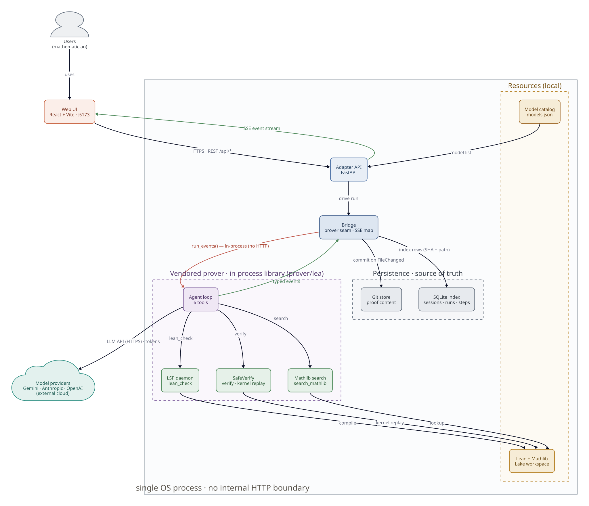

apps/lea-standalone · current snapshot, 2026-06-29
The collaborator-facing interface: chat, the writeable Lean canvas, the project window (instructions / memory / files / blueprint graph), and Settings.
The single backend. Routes under /api/* (runs, sessions, projects, settings, search, models, stats). Owns supervision/approval policy and the SSE response for …/events.
Composes project context into messages, builds LeaConfig, calls run_events(cfg, …) in-process, maps the prover's typed events onto SSE, and runs the per-tool approval gate.
The proving loop: write → compile → read errors → edit, repeat. Tools: read_file · write_file · edit_file · lean_check · bash · search_mathlib. Streams model tokens from the providers.
messages + config; tool results; model tokens.LSP daemon — warm lean_check (~0.2s edits). SafeVerify — kernel replay + axiom whitelist (the honest "verified" verdict; catches structural cheats). Mathlib search — lemma lookup (budget 20/problem).
.lean file path / a search query.Lean + Mathlib — the Lake workspace (Lean v4.29, pinned Mathlib); proofs at proofs/. Model catalog — models.json, the provider/model list read by both the UI and the adapter.
Git owns proof content (commit on every FileChanged). SQLite is a rebuildable index (sessions · runs · code_steps · messages · projects · usage) — never proof bytes. Session status is derived from the latest code-step verdict, so it can't drift.
Gemini · Anthropic · OpenAI, reached over HTTPS. Keys come from the root .env / Settings (redacted, presence-only to the client).
| Boundary | Input ▸ | Output ◂ |
|---|---|---|
| User ⇄ App | NL statement; model + API keys; project context; canvas edits; tool approvals | Compiling proof (0 errors / 0 sorry); live progress; check + SafeVerify verdicts; blueprint graph; usage/cost; downloadable repo |
| UI ⇄ Adapter | REST /api/* |
SSE stream: file snapshots, verdicts, usage, approval prompts |
| Adapter ⇄ Prover | in-process run_events(cfg, messages) |
typed events (FileChanged, CheckResult, VerifyResult, UsageUpdated, ToolApprovalRequested, Finished, …) |
| Prover ⇄ Resources | Lean source; Mathlib queries; model prompts | diagnostics; lemma matches; streamed tokens |